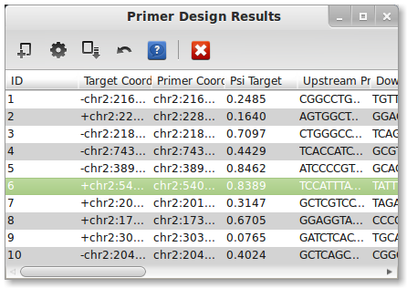

Welcome to PrimerSeq!¶
PrimerSeq aims to design RT-PCR primers on appropriate flanking exons around your target of interest. Its aim is to design primers for validating alternative splicing events. PrimerSeq is particularly advantageous for designing a large number of primers for validating differential alternative splicing events found in RNA-Seq data.
PrimerSeq is licensed under GPLv3. PrimerSeq relies on the following software:
- Primer3 - GPLv2
- SAM-JDK - Apache License V2.0, MIT
- BigWig Java API - LGPL v2.1
External Documentation¶
User Documentation¶
The PrimerSeq Graphical User Interface (GUI) consists of four main components.
- Menu items
- Required tab
- Optional tab
- Results Window
2. Required tab¶
The required tab consists of input that must be filled in before PrimerSeq can design primers. The required input is as follows:
- Genome sequence (FASTA)
- Gene annotation (GTF)
- Mapped reads (SAM/BAM(s))
- Target exon(s)
- Output file
2.1 Genome sequence (FASTA)¶
Genome sequences are only allowed in FASTA format. Use FASTA files that contain the entire genome sequence for a species to avoid problems. You can obtain the Human and Mouse genome from the following links:
The first time you load a FASTA file may take several minutes. Subsequent loading will occur instantly.
2.2 Gene annotation (GTF)¶
PrimerSeq uses gene annotation in GTF format. Ultimately, the choice of where you obtain the GTF is up to you. You could download GTFs known to work from the PrimerSeq sourceforge website, download GTFs from UCSC or Ensembl, or use GTF output from transcript assemblers like Cufflinks. For ease of use, GTFs for human and mouse are provided. UCSC’s known gene annotation is preferred over Ensembl.
You can also mix several GTF files into a single input GTF file for PrimerSeq! For more detailed explanations please click here.
2.3 Mapped reads (SAM/BAM(s))¶
You can specify none, one or multiple SAM/BAM files as input. Make sure to hold down the ctrl key to select multiple files. SAM/BAM files are the typical output format from read aligners like Tophat. The SAM/BAM file allows PrimerSeq to estimate the relative abundance of different isoforms. If you know your BAM file is sorted (like the output from Tophat) then please name the BAM file with a .sorted.bam extension so PrimerSeq does not try to re-sort the file.
2.4 Target exon(s)¶
Enter target coordinates as (strand)chr:start-end. The first nucleotide on a chromosome is at position 0. The end position is not inclusive.
If you wish PrimerSeq to automatically find flanking exons then only specify a list of target exons where each exon is specified on a different line.
-chr18:9562919-9563044
However, you may also specify the flanking exons for primer design. Follow the following convention to do this:
targetExon1,upstreamExon1,downstreamExon1 targetExon2,upstreamExon2,downstreamExon2
The target exon is followed by upstream flanking exon and then by the downstream flanking exon (separated by a comma). Remember to follow the same coordinate format for just the target exon case.
2.5 Output file¶
PrimerSeq saves results to the text file you specify immediately after primer design is finished.
3. Optional tab¶
- Minimum Flanking PSI: minimum inclusion level where a primer is allowed to be placed on that exon
- Splice Junction: source for defining exon junctions
- Gene ID: flag for whether the GTF has a valid Gene ID
- Keep Temporary: flag for keeping temporary files created when running PrimerSeq
- Read Threshold: minimum read count necessary to define a novel junction from RNA-Seq
- Anchor Length: minimum number of bases on both sides of a junction for a read to be considered valid
- Min. Jct Count: assign at least this number of reads to a junction known in the GTF annotation
4. Results Window¶
The results window allows you to plot the results of primer design and check for unintended product amplification using UCSC’s In-Silico PCR. For information on producing these results, please see the getting started page.